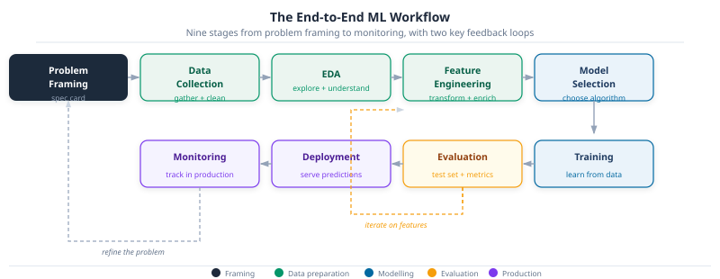
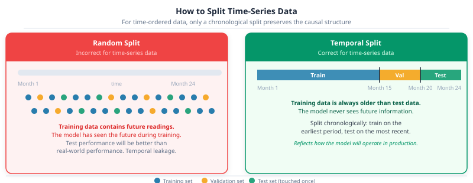
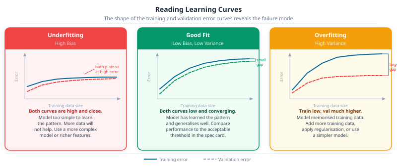

Part 24: The ML Workflow and Problem Framing

DS-MLOps ML Landscape
Python 3.12+ | Author: Anthony Faustine
You classified the energy theft problem in Part 23: anomaly detection, unsupervised paradigm. Knowing what kind of problem you have doesn’t tell you how to collect the data, how to split it without leaking the future into training, or how to know when the model is good enough to deploy. This chapter maps the nine-step workflow that every ML project follows, from problem framing to production monitoring.
Parts 22-23 built the landscape and taxonomy. This workflow is the operating manual for everything in Parts 25-27 (sklearn, pipelines, sklearn-pipeline).
Why Workflow Matters
In Part 23 you classified the energy theft problem: it’s anomaly detection, unsupervised paradigm. Knowing what kind of problem you have doesn’t tell you how to build a working system.
The naive path is tempting. Load the meter data. Fit an isolation forest. Look at the output. Report a result. This path fails in practice, and it fails in ways that are hard to detect from inside the project.
Consider what happens on a dataset where 0.5% of meters are tampered. A model that flags nothing at all is 99.5% accurate. A model that flags everything is 0.5% accurate. Neither catches a single thief. Accuracy, used naively, gives you a number that looks meaningful and tells you nothing about whether the system works.
The structured workflow exists to prevent this. It forces you to specify what success means before you start, to evaluate on data the model has never influenced, and to diagnose failure rather than paper over it. The rest of this chapter walks through each stage.
1. Translating a business problem into an ML problem
The most consequential step in any ML project happens before a line of model code is written. A vague goal produces a model that’s impossible to evaluate and impossible to improve. A precisely specified problem produces a model you can hold accountable.
A complete ML problem specification has five components.
Key Concept: The five-component ML spec
| Component | The question it answers |
|---|---|
| Target variable | What exactly is the model predicting or scoring? |
| Task type and paradigm | Which of the seven task types applies? Which learning paradigm? |
| Success metric | How is “good performance” measured, in terms the business recognises? |
| Acceptable threshold | What performance level is good enough to be worth deploying? |
| Data specification | What data is available, covering what time period, at what granularity? |
Write this down before touching data. If any row can’t be filled in, the problem isn’t ready to be modelled.
1.1 Three worked examples
The same five components apply regardless of domain or task type.
Energy theft detection (from Part 22)
| Component | Specification |
|---|---|
| Target variable | Anomaly score per smart meter per week |
| Task type and paradigm | Anomaly detection, unsupervised |
| Success metric | Recall at 10% false positive rate |
| Acceptable threshold | Catch at least 80% of tampered meters |
| Data specification | 24 months of 15-minute smart meter readings for 50,000 accounts |
Customer churn prediction
| Component | Specification |
|---|---|
| Target variable | 30-day churn probability per customer |
| Task type and paradigm | Classification, supervised |
| Success metric | Recall at 0.4 probability threshold |
| Acceptable threshold | Flag at least 70% of churners before they cancel |
| Data specification | 12 months of transaction history and support interactions, with churn labels |
Customer support reply generation (GenAI)
| Component | Specification |
|---|---|
| Target variable | A draft reply to an incoming support ticket |
| Task type and paradigm | Generation, self-supervised |
| Success metric | Do support agents prefer the generated reply over the current template? How often does the model produce factually incorrect information? |
| Acceptable threshold | Generated replies preferred in at least 65% of side-by-side comparisons; factual error rate below 3% |
| Data specification | 18 months of resolved support tickets with agent replies |
The GenAI example shows that the spec card applies even when the output is open-ended text. The metric looks different (a human preference comparison rather than a recall rate), but the discipline is identical: define how you’ll judge success before touching data.
Pro Tip
If your success metric and acceptable threshold can’t be agreed on with the stakeholder who will use the model, stop. A model trained toward the wrong objective will be optimised toward the wrong outcome. The spec card is a conversation tool as much as a technical document.
Key Concept: Optimizing and satisfying metrics
When a spec card lists multiple metrics, designate one as the optimizing metric: the single number you maximise (or minimise) without bound. All others become satisfying metrics: constraints that must be met, but once met, require no further improvement.
For the energy theft spec: recall at 10% FPR is the optimizing metric (catch as many thieves as possible). Inspector visit budget per month is a satisfying constraint (stay within it). For the GenAI support reply spec: win rate is the optimizing metric. Hallucination rate below 3% is a satisfying constraint, not something to minimise beyond the threshold.
The distinction matters because it governs which trade-offs are acceptable. You can tolerate a slightly lower win rate if it keeps hallucination below the threshold. You can’t sacrifice recall to improve a satisfying metric that already meets its bound.
Goal: Complete a five-component ML specification for each problem below.
- A hospital wants to reduce unplanned ICU admissions. They have 3 years of patient records including vitals, lab results, medications, and discharge outcomes.
- An e-commerce platform wants to show each user a personalised product list on their homepage. They have 2 years of purchase history and product metadata for 1 million users.
- A manufacturer wants to reduce unplanned machine downtime. They have 18 months of vibration and temperature sensor readings from 40 CNC spindles, with maintenance records but no fault labels during normal operation.
For each: identify the target variable, task type and paradigm, success metric, acceptable threshold, and data specification. Compare your spec against the answer key to find what you left ambiguous.
2. The end-to-end ML workflow
A machine learning project isn’t a sequence of steps you execute once. It’s a cycle. You return to earlier stages when later stages reveal problems.

The nine stages cluster into four phases. Problem framing is the only stage where no data is touched: its output is the spec card. The data preparation stages (collection, EDA, feature engineering) are often the most time-consuming and surprise-prone part of any real project. The modelling stages (model selection, training) produce the model, but the quality of what comes out depends entirely on the stages before them. Evaluation and production (evaluation, deployment, monitoring) close the loop and feed information back into the next cycle.
Problem framing. The five-component spec card from Section 1. Everything downstream depends on getting this right.
Data collection. Gathering the data specified in the spec card. In practice this often reveals that the data you assumed exists doesn’t, or has quality problems that change the problem definition.
Exploratory data analysis (EDA). Understanding what’s in the data before modelling: distributions, missing values, class imbalances, temporal patterns, obvious anomalies. EDA frequently reveals that a feature you planned to use is contaminated (see Section 3: data leakage).
Feature engineering. Transforming raw data into inputs the model can use. For the energy theft problem: aggregating 15-minute readings to daily consumption profiles, computing deviation from neighbourhood median, encoding time-of-day and day-of-week patterns.
Model selection. Choosing the algorithm family and architecture appropriate for the task type and paradigm identified in the spec card. Part 25 covers this in depth.
Training. The model learns by processing training examples repeatedly, adjusting its parameters to reduce error each time. Hyperparameter choices (learning rate, model depth, regularisation strength) are made by observing validation set performance, not training performance.
Evaluation. Testing the trained model on the held-out test split using the metric from the spec card. This is the honest assessment. If the model doesn’t meet the acceptable threshold, return to feature engineering or model selection.
Deployment. Packaging the model as a service or embedded component that receives new data and returns predictions. Covered in Part 7.
Monitoring. Tracking model performance in production over time. When performance degrades (because the world changes), the monitoring signal feeds back to the problem framing stage and the cycle begins again.
The three-step process from Part 23 (identify a pattern, build a model, use the model) maps directly onto this pipeline. Step 1 spans data collection through feature engineering. Step 2 is model selection and training. Step 3 is evaluation, deployment, and monitoring.
3. Data splits done right
The goal of training an ML model is generalisation: the ability to make correct predictions on data the model’s never seen. The split enforces that honestly. If the model is evaluated on data it trained on, you’re measuring memorisation, not learning.
3.1 The three-way split
A well-designed split gives each partition a distinct, non-overlapping role.
The training set is where learning happens: the model sees these examples and adjusts its parameters to reduce error on them. The validation set is held back throughout training and used to tune hyperparameters and compare candidate models. Although the model never trains directly on validation data, the choices you make based on it shape the final result: it influences the model indirectly, as a guide for development decisions. The test set is reserved for the single final evaluation. If you check the test set result and then make any change to the model, you’ve effectively turned it into a second validation set, and the number it reports is no longer an honest estimate of production performance.
A common split ratio is 70/15/15 for large datasets, or 60/20/20 when data is scarcer. For very large datasets with millions of examples, proportions shift toward 98/1/1: the validation set only needs to be large enough to reliably detect differences between models, which is often tens of thousands of examples rather than twenty percent of the full dataset. For very small datasets (under a few thousand examples), cross-validation on the training set replaces the validation split.
Common Mistake: Using the test set during development
Every time you evaluate on the test set and make a model change based on what you see, you’re using the test set as a validation set. After enough such iterations, the model is implicitly overfitted to the test set and the reported metric is no longer an honest estimate of real-world performance. Treat the test set as a sealed envelope. Open it once.
3.2 Temporal splits for time-series problems
For any problem where the input is an ordered time series (energy consumption, sales, sensor readings, financial prices), a random split creates a form of data leakage called temporal leakage.
If training examples include readings from month 18 and test examples include readings from month 6, the model has effectively seen the future during training. The patterns it learned are contaminated by future information. Its test performance will be better than its real-world performance, because in production the future is never available.
The correct approach for time-series problems is always a chronological split: train on the earliest period, validate on the next period, test on the most recent period.

3.3 Training and production distribution mismatch
A subtler and often more damaging problem than temporal leakage is distribution mismatch: your training data comes from a different distribution than the data the model will see in production.
A common scenario: you’re building a demand forecasting model for agricultural processing sites in rural Tanzania. You have abundant training data from large commercial facilities in Dar es Salaam, but the actual deployment targets are small farm-level sites with very different consumption profiles. The model evaluates well on Dar es Salaam validation data and collapses in production.
The fix is directional: your validation and test sets must always reflect the distribution of data the model will encounter in production, even if this means the training distribution is inconsistent with the val/test distribution. It’s better to train on abundant but imperfectly matched data and evaluate on representative production-like data than the reverse. When you have two data sources of very different sizes, populate val and test from the production-representative source and train on whatever you have available. Pooling everything and splitting randomly means val and test will mostly reflect the larger source, not the production environment.
3.4 Feature leakage
A subtler form of leakage comes from the features themselves rather than the split. Feature leakage occurs when a column used as a model input encodes information that wouldn’t be available at prediction time.
In the energy theft problem: if you include a column “flagged by field inspector” as a feature, you’re training on the answer. The model will learn that flagged meters are anomalies, which is circular. In production, the inspector visits happen after the model has already flagged an account, so this column doesn’t exist at the time the model runs.
Common Mistake: Features from the future
In forecasting problems, a common version of feature leakage is including a feature computed from data that post-dates the prediction target. If you’re predicting electricity demand for hour T, any feature derived from readings at hour T or later is leaked. Build features exclusively from data available at the moment the prediction is required.
4. Evaluation metrics that match the problem
Correct splits and clean features ensure the model is trained and evaluated honestly. The next question is what to measure: how to define success for each task type in a way that reflects the actual business objective.
Before choosing a metric, compute a baseline: the performance of the simplest possible prediction. For regression, predict the mean of the training set. For classification, predict the majority class. For forecasting, use yesterday’s value. For anomaly detection, flag nothing. A model that doesn’t beat this baseline isn’t adding value, regardless of what the metric number says.
The seven task types from Part 23 divide into three groups based on how evaluation works.
4.1 Group 1: Supervised tasks with a clear ground truth
You have labeled examples. Evaluation is a comparison between the model’s output and the known correct answer.
Classification. The starting metric is never accuracy on an imbalanced dataset. For the energy theft problem with 0.5% prevalence, a model that flags nothing scores 99.5% accuracy and catches zero thieves.
Use precision (of the accounts you flagged, how many were actually tampered), recall (of all tampered accounts, how many did you catch), and F1 (their harmonic mean). Choose between them based on which error is more costly: missing a theft (low recall) or wasting an inspector visit on a legitimate account (low precision). AUC-ROC summarises performance across all possible thresholds.
Regression. MAE (mean absolute error) is interpretable: it’s the average prediction error in the same units as the target. RMSE penalises large errors more heavily. MAPE (mean absolute percentage error) is scale-independent and useful when comparing across products or meters of different sizes. R² alone is insufficient because a model with high R² can still be systematically biased in ways that matter: the Google Maps route optimiser from Part 22 depends on accurate per-segment travel time predictions, and a model that consistently overestimates congested roads will produce wrong routes even with a high R² overall.
Forecasting. The challenge that separates forecasting from regression is that accuracy degrades as the prediction horizon extends. A metric that averages error across all horizons can hide a model that performs well for one-step-ahead predictions but collapses at longer ranges. Good evaluation checks performance at multiple horizons, not just overall. The specific scale-invariant metrics suited to forecasting are covered in Part 25 alongside forecasting algorithms; the principle to carry from here is that evaluation must respect the time structure of the problem.
Ranking. A ranking model isn’t classifying items as relevant or irrelevant: it’s ordering them. This distinction changes how success is measured. Getting the right result to position 1 is far more valuable than getting it to position 10, because users rarely scroll past the first few results. All ranking metrics weight top positions more heavily than lower ones, and Part 25 covers the specific ones alongside ranking algorithms. What matters here is to resist using classification accuracy as a proxy: a model that puts the best result at position 8 out of 10 isn’t 80% accurate. It has failed its purpose, because no user reaches position 8.
Anomaly detection. Class imbalance makes accuracy meaningless (same problem as classification, but more extreme). Use recall at a fixed false positive rate: given that you’re willing to investigate at most 10% of accounts per month, how many anomalies do you catch? The F1 score at the chosen threshold and the precision-recall curve both give a full picture across thresholds.
Key Concept: Precision-recall tradeoff
Every supervised model produces a score for each example rather than a hard prediction. Choosing a threshold converts that score into a binary decision. A lower threshold flags more examples as anomalies: recall rises but precision falls (more false alarms). A higher threshold flags fewer: precision rises but recall falls (more misses). The right threshold depends on the asymmetry of the two errors. In the energy theft case, the cost of missing theft (lost revenue, unfair distribution) typically outweighs the cost of an unnecessary inspector visit, so the threshold should be set to favour recall.
4.2 Group 2: Generation tasks
Generation tasks have no single correct output. A good summary of a document isn’t the only good summary, and there’s no label to compare the model’s output against. This makes evaluation structurally different from supervised tasks: you’re not checking whether the answer is right, you’re judging whether the output is useful.
For tasks where a reference output exists, such as translation or summarisation, automated metrics measure how closely the model’s output resembles a human-written reference. These are useful for detecting regressions (if a new model version produces dramatically different outputs, the score will shift), but they’re proxies, not ground truth. A high-scoring output can still miss the point of the source material.
For open-ended generation, automated metrics capture even less of what matters. The output may be grammatically correct, fluent, and similar in style to the reference, while being factually wrong or unhelpful. Evaluating these systems requires a combination of human judgment, task-specific checks (does the generated code actually run? does the generated SQL return valid results?), and carefully defined criteria that reflect the specific use case. The evaluation approaches for language models are covered in Part 6.
The principle that applies regardless of generation task type: define in the spec card how you’ll distinguish a good output from a bad one before training anything. If that question can’t be answered, the spec card is incomplete and the model has no clear objective.
4.3 Group 3: Clustering (no ground truth)
Clustering belongs to the unsupervised paradigm: there are no labels to compare against, so the usual definition of “correct” doesn’t exist. Evaluation works at two levels.
Internal metrics measure mathematical structure: whether points within a cluster are more similar to each other than to points in other clusters. These can help you compare different configurations (five groups versus three groups, for instance), but they can’t tell you whether the groups are meaningful. A result that looks clean by internal measures can still be useless in practice. The specific metrics used are covered in Part 25 alongside clustering algorithms.
Domain validation fills the gap that internal metrics can’t. Show the result to someone who knows the domain: do the clusters correspond to recognisable patterns? For the energy theft problem, consumption-profile clusters are only valuable if they correspond to interpretable household types that an analyst can act on. If a clustering result can’t be explained to a domain expert, the metric scores are irrelevant to the business decision.
Common Mistake: Trusting internal metrics alone
It’s possible for clusters to score well on mathematical separation measures while representing nothing meaningful in the domain. Always combine internal evaluation with domain-expert review. The two questions are distinct: “are the clusters well-separated?” and “do the clusters mean something useful?”
4.4 Reference table
The table below is a forward reference. Metric names not yet defined are introduced here as orientation and explained in their respective algorithm chapters.
| Task type | Primary metric | Common mistake | Key challenge |
|---|---|---|---|
| Classification | F1 / AUC-ROC / Recall@threshold | Accuracy on imbalanced data | Threshold selection |
| Regression | MAE / MAPE | R² as the sole metric | Scale and bias sensitivity |
| Forecasting | MASE / Coverage | Evaluating on shuffled data | Temporal leakage in evaluation |
| Ranking | NDCG@k / Precision@k | Classification accuracy | Position matters more than binary relevance |
| Generation (classical) | BLEU / ROUGE + task-specific | Treating them as absolute quality scores | No single ground truth |
| Generation (LLM/GenAI) | Win rate / LLM-as-judge / pass rate | Perplexity as quality metric | Hallucination not detectable automatically |
| Clustering | Silhouette + domain review | Optimising metrics without expert validation | No objective ground truth |
| Anomaly detection | Recall @ fixed FPR / F1@threshold | Accuracy | Extreme class imbalance |
In Practice
Metric choice isn’t purely technical. Healthcare screening systems optimise recall: missing a disease is worse than a false alarm, so the threshold is set to catch nearly everything at the cost of more follow-up tests. Fraud alert systems optimise precision: a false accusation damages customer trust more than missing one fraudulent transaction. The asymmetry of errors is a business decision that should be made explicit in the spec card, not discovered during model evaluation.
5. Diagnosing failure: bias, variance, and learning curves
Knowing what to measure is half the challenge. The other half is knowing what to do when the number you measure falls short. When a model doesn’t meet the acceptable threshold, the instinct is to reach for more data or a more complex model. Both can help, but applied to the wrong problem, both waste time. The bias-variance framework gives you a way to read failure systematically before reaching for any fix.
Start with a baseline. Before diagnosing anything, you need a reference point: what level of performance should a reasonable solution achieve? For tasks humans can perform, human-level performance is a practical ceiling – it approximates the best accuracy achievable given the signal in the data and the quality of the labels. For other tasks, a simple rule-based system or the previous production model serves the same purpose.
Two gaps then reveal where the problem lies. The gap between training error and the baseline is avoidable bias: the portion of training error that a better model could in principle reduce. The gap between training error and validation error is variance: error caused by fitting the noise in the training set rather than the underlying pattern. The larger gap is the bottleneck, and it determines which lever to pull:
- If avoidable bias is much larger than variance: the model is underfitting. Add capacity, enrich features, or train longer. Collecting more data won’t close this gap.
- If variance is much larger than avoidable bias: the model is overfitting. Add more training data, apply regularisation, or simplify the model. Increasing complexity will make it worse.
High bias (underfitting) occurs when the model is too simple to capture the underlying pattern. Both training and validation error are high, and the two curves stay close together. The small gap isn’t a sign of good generalisation; it means the model fails equally on seen and unseen data. Adding more examples doesn’t fix this.
High variance (overfitting) is the opposite failure. The model has memorised its training examples rather than learning a general pattern, so training error is low while validation error remains much higher. The gap between the two curves is the diagnostic signal: what the model learned includes noise specific to the training set, noise that doesn’t transfer to new data.
A good fit shows both curves converging at a low error level with a small gap. Training error is low, validation error is close, and both meet the acceptable threshold from the spec card.
That’s the target state.
Learning curves make these patterns visible by plotting training and validation error as a function of training data size or training time. The shape of the curves tells you which failure mode you’re facing and points to the right intervention.

Goal: For each scenario below, identify the failure mode and name one intervention.
- A demand forecasting model has training MASE of 0.82 and validation MASE of 0.85 across all training set sizes. Both curves have plateaued.
- An anomaly detection model achieves training recall of 94% but validation recall of 51%. The gap does not close as training data increases.
- A churn classification model has training F1 of 0.78 and validation F1 of 0.74, both improving steadily as more data is added.
For each: name the failure mode (underfitting, overfitting, or well-fitted), explain what the learning curve tells you, and suggest one concrete action.
6. When performance is insufficient: the decision framework
Knowing the failure mode points directly to the intervention. A useful mental model is to treat performance problems hierarchically: fix training performance first, then validation performance, then test performance, then production performance. Each level has its own levers, and applying a lever at the wrong level wastes time. Regularisation applied when training error is still too high makes underfitting worse. Collecting more data when the training/val gap isn’t the bottleneck provides no benefit.
The table below maps each diagnostic signal to the right levers.
| Diagnostic signal | Failure mode | Interventions |
|---|---|---|
| Training error is high; val error similar | Underfitting (high bias) | More complex model; richer feature engineering; less regularisation; longer training |
| Training error is low; large train/val gap | Overfitting (high variance) | More training data; stronger regularisation; simpler model; dropout (for neural nets) |
| Validation error is good; test error is poor | Leakage or distribution shift | Check for temporal or feature leakage; verify val and test data come from same distribution |
| Training error is good; production performance is poor | Train/production distribution mismatch | Audit whether val/test reflects actual production data; add production-distribution examples to training |
| Metrics are good; real-world outcomes are not | Wrong metric | Return to spec card; realign metric with business objective |
| Model is accurate; decisions are bad | Prediction feeds wrong decision layer | Review how predictions are used downstream |
| Cannot diagnose from aggregate metrics | Undetected subgroup failure | Error analysis: slice metrics by subgroup |
The last row deserves emphasis. Aggregate metrics hide failures that are concentrated in specific subgroups. An anomaly detection model with overall recall of 78% looks acceptable until you slice by geography and find recall of 40% for rural meters because their consumption patterns were underrepresented in training.
Don’t declare a model ready until you’ve sliced the metrics.
Error analysis – examining individual failures and slicing metrics by region, meter type, time of year, or customer segment – is what separates engineering discipline from benchmark chasing.
Goal: Identify what is wrong with each project setup below.
- A team is building a product recommendation system. They split their 2-year purchase history randomly into train/val/test and achieve Precision@10 of 0.74 on the test set. They are preparing to deploy.
- A team is building a fraud detection model. Their dataset has 0.1% fraud rate. They report 99.9% accuracy and consider the model ready. The spec card threshold was “catch at least 60% of fraud cases.”
- A team is building a demand forecasting model for 500 products. They evaluate using R² and report 0.91. They are confident the model is production-ready.
For each: identify the specific problem (wrong split, wrong metric, or something else), explain the consequence if the model is deployed as-is, and name the corrective action.
Next: Part 25: The ML Algorithm Panorama maps the full landscape of algorithms across all seven task types. Given a well-specified problem and a correctly designed evaluation, which algorithm family do you reach for first, and when do you escalate to more complex approaches?